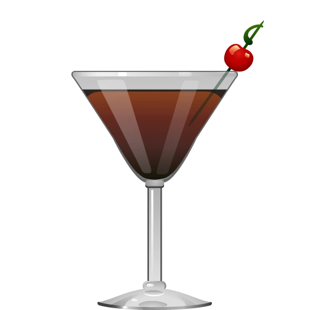

The venerable Manhattan is the grandfather of so many cocktails we know as classics today. It was the very first cocktail (as far as we know) to use vermouth, and spawned a legion of children – including the Martini. This is the kind of drink you could spend your whole life mastering; we say it’s a worthy investment of your time.
The Manhattan cocktail is said to have been created in the early 1880s at the Manhattan Club in New York City. Legend has it that it was crafted for a banquet hosted by Jennie Jerome (Lady Randolph Churchill), mother of Winston Churchill. This classic drink quickly gained popularity and became a symbol of sophistication and class.
| 2 parts | Rye or Bourbon Whiskey |
| 1 part | Sweet Vermouth |
| 2 dashes | Angostura Bitters |
| 1 | Maraschino Cherry (for garnish) |
Stir with ice and strain into a chilled cocktail glass. Garnish with a cherry.
The Manhattan is traditionally served in a martini glass. Although, it can be served in a coupe or Nick & Nora glass as well. The elegant stems of these glasses allows the drink to stay cool while holding it, preserving the cocktail’s rich aroma and flavor.
The Manhattan has inspired numerous other classic cocktails, such as the Rob Roy (which uses Scotch instead of Rye), and the Old Pal (which uses dry vermouth and a splash of Campari). Its influence can be seen in most stirred, spirit-forward drinks that emphasize a balance between sweet and bitter flavors.
Perfect Manhattan
Uses equal parts sweet and dry vermouth.

Black Manhattan
Replaces vermouth with Amaro for a richer flavor.
Maple Manhattan
Adds a hint of maple syrup for sweetness.